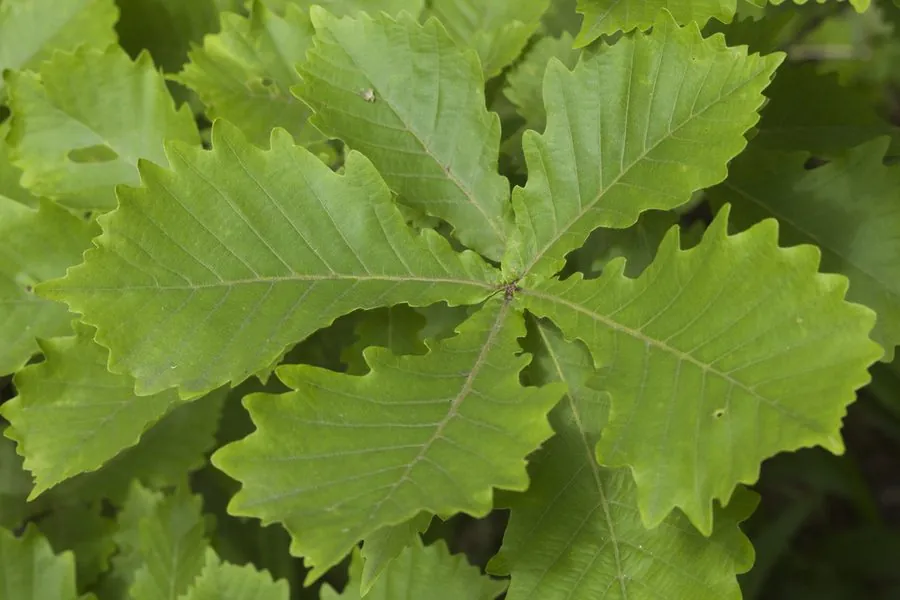

乔木 · 植物界
蒙古栎 Quercus mongolica

中国东北与华北山地的主要落叶阔叶树种，叶片宽大、秋色金黄，木材坚硬，橡实可作饲料与酿酒。
- 分类
- 门被子植物门纲木兰纲目壳斗目科壳斗科属栎属
- 栖息环境
- 海拔 2000 米以下的山地、丘陵，喜光耐寒耐旱
- 地理分布
- 中国东北、华北及西北山地，朝鲜半岛、日本、俄罗斯远东也有分布
- 保护级别
- 暂无评估；中国未列入国家重点保护野生植物名录
物种志
蒙古栎为落叶乔木，高可达 30 m，树皮灰褐色、深纵裂；叶片倒卵形至长倒卵形，边缘具波状圆齿，叶背淡绿色。雌雄同株，雄花序下垂，雌花单生或簇生；壳斗杯形，苞片覆瓦状排列，坚果卵圆形，成熟时褐色。
蒙古栎分布于中国东北、华北及西北山地，也见于朝鲜半岛、日本、俄罗斯远东，喜光、耐寒、耐旱，适应性强，是温带落叶阔叶林与针阔混交林的主要树种。木材坚硬、耐腐，可供建筑、家具、车辆与薪炭用；橡实含淀粉，可酿酒或作饲料；树皮与壳斗可提取栲胶；叶可饲养柞蚕。蒙古栎秋叶金黄，是北方山地重要的秋色叶树种。
形态与习性
- 株高可达 30 m，树皮深纵裂
- 花期4–5 月，雄花序下垂
- 果期9–10 月，坚果卵圆形
- 光照喜光，不耐长期荫蔽
- 水分耐旱，怕积水
- 主要用途建筑与车辆用材、橡实酿酒饲料、柞蚕饲料
趣味知识
- 蒙古栎是东北山地针阔混交林的主要树种之一，秋季叶色金黄。
- 蒙古栎的橡实含淀粉，可酿酒或作饲料。
- 蒙古栎叶片宽大、边缘呈波状圆齿，秋色金黄，观赏性强。